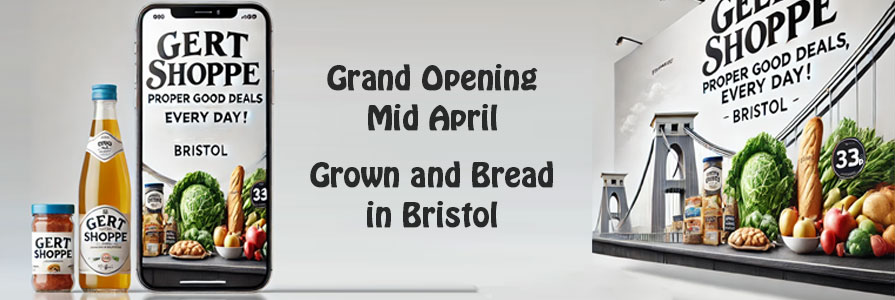

|
News
>
Bristol News
|
|||
| We are in talks to offer compensation for quotes on the r/bristol subreddit
|
|||
| Bristolive is potentially going to compensate the users of r/bristol for any content used in exchange for allowing links directly to bristolive.co.uk
|
|||
| NEWS
04:20, 01 APR 2025
Bristolive is potentially going to compensate the users of r/bristol for any content used in exchange for allowing links directly to bristolive.co.uk
In a move that could mark a new chapter in the often strained relationship between local media outlets and online community forums, Bristolive - the Bristol-based digital news platform—has confirmed it is in discussions to offer compensation to members of the Reddit community r/bristol for the use of content originating from the subreddit. The talks come amid growing concerns among Reddit users over the frequent republishing of their posts, photos, and local updates on Bristolive’s website, often without attribution or direct benefit to the original contributors. The subreddit, which serves as a vibrant hub for local news, discussion, and community sharing, has seen several of its most engaging posts featured on Bristolive, sometimes repackaged into articles with little more than a passing reference to their Reddit origins. “It’s about respect and recognition,” said one r/bristol moderator, who asked to remain anonymous. “Many users contribute valuable insights, breaking news, and local knowledge, and to see that content monetized elsewhere without any benefit to the community feels exploitative.” In response to mounting criticism and pressure from both Reddit moderators and the wider Bristol community, Bristolive has reportedly initiated informal talks with r/bristol moderators, proposing a model where users whose content is used could receive modest compensation - possibly in the form of vouchers, recognition programs, or small payments. In return, Bristolive hopes to establish a more cooperative relationship with the subreddit, including the lifting of bans on direct links to bristolive.co.uk, which moderators had previously restricted due to concerns over link spamming and low relevance content. A New Model of Content Sharing? The proposal is still in its early stages, and details remain scarce, but sources close to the discussions suggest Bristolive is considering a contributor scheme, where Reddit users whose posts or comments are featured in articles would be credited and optionally compensated. This could include a monthly roundup of top community contributors, exclusive Bristolive perks for Redditors, or a micro-payment system tied to content performance. A spokesperson for Bristolive issued a brief statement confirming the discussions:
“We value the voices of Bristol’s online community and recognise the importance of r/bristol as a grassroots platform. Our goal is to find a way to work collaboratively, ensure proper attribution, and offer something meaningful in return when community content enhances our journalism.”
For many users, however, compensation is only part of the issue. Transparency, proper attribution, and consent remain core concerns. Several Redditors have expressed skepticism about whether Bristolive’s intentions are genuine or simply a response to mounting online criticism and declining user trust. “It’s not just about money,” said Reddit user u/nailsandcider, a frequent contributor to local news threads. “We want to see proper credit given and have some say in how our content is used. We’re not a free content farm.” Moderators Cautiously Optimistic The moderator team of r/bristol, which operates independently of any media organisations, has not confirmed whether an agreement is close. However, in a recent post pinned to the subreddit, moderators acknowledged that discussions were ongoing and invited community feedback on what fair compensation or recognition should look like. “We are exploring ways to ensure community content is treated respectfully and fairly if used externally,” the post read. “Nothing has been agreed yet, and we are putting the interests of users first in any talks.” Some suggestions from the community have included donations to local charities on behalf of contributors, free digital subscriptions, or even a shared community content platform jointly managed by Bristolive and Reddit moderators. A Test Case for Local Media? If an agreement is reached, it could represent a pioneering model of collaboration between traditional media and online communities, especially in an era where user-generated content increasingly drives traffic and engagement for news outlets. Media analyst Dr. Fiona Layton from the University of the West of England believes the move could set a precedent:
“Local media must adapt to the fact that communities now generate news in real-time. Offering compensation and working cooperatively is a progressive step—and one that could help rebuild trust with digital audiences.”
For now, r/bristol users remain watchful but intrigued. Whether Bristolive’s olive branch will bloom into a meaningful partnership or wilt under the weight of mistrust remains to be seen |
If you have got this far and still not worked it out, this is an April Fools, but thanks for reading!
Disclaimer:
This website is a parody and has been created solely for entertainment purposes as part of an April Fools' Day 2025 joke. Any names, organisations, or events referenced are entirely fictional, and any similarities to real persons, companies, or publications—past or present—are purely coincidental. This site is not affiliated with, endorsed by, or representative of any actual news outlet or organisation.
This website is a parody and has been created solely for entertainment purposes as part of an April Fools' Day 2025 joke. Any names, organisations, or events referenced are entirely fictional, and any similarities to real persons, companies, or publications—past or present—are purely coincidental. This site is not affiliated with, endorsed by, or representative of any actual news outlet or organisation.